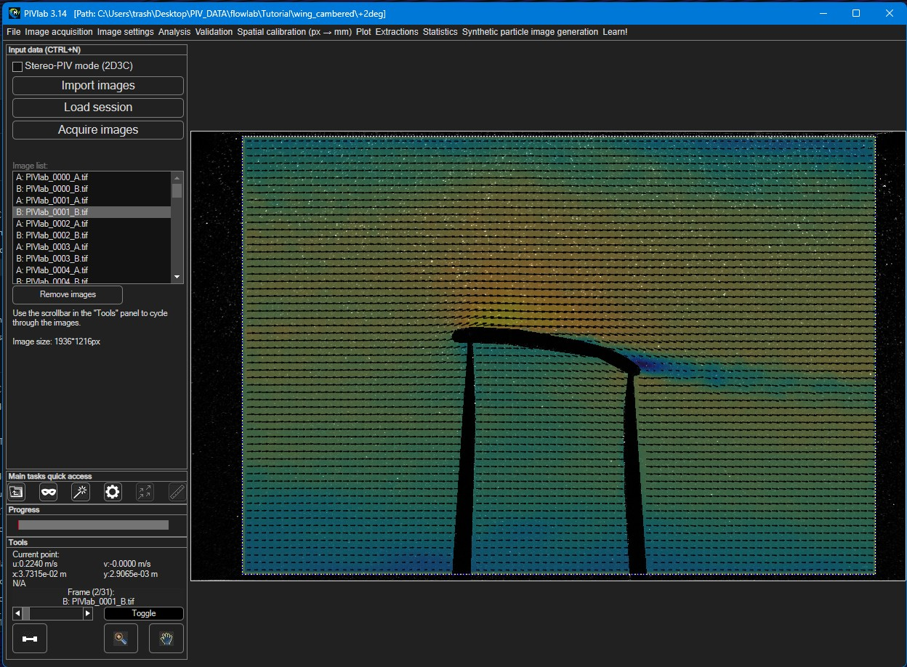

The interface & workflow
Before diving into individual features, it helps to know how the PIVlab window is organised and the order you're meant to work through it. Almost everything in PIVlab follows one simple rule: work from the left of the menu bar to the right.
The main layout
The window is organised into a handful of regions, numbered here to match the rest of this page:

- 1Menu bar — every tool, ordered left-to-right.
- 2Settings panel — configures the selected step; swaps per menu item.
- 3Image display — your image, vectors and overlays.
- 4Quick access — icon shortcuts to common steps.
- 5Progress — a bar for long operations.
- 6Tools — frame navigation, zoom/pan and a live readout.
Selecting a menu item (region 1) swaps the settings panel (region 2); it does not open a separate window. That's why the workflow feels like moving a single panel through a sequence of steps. Regions 4–6 down the bottom-left are always visible, whatever step you're on — they are described in The Tools panel and Quick access & progress below.
Work from left to right
The menu bar mirrors a typical PIV analysis, in order. A normal session moves through it roughly like this:
- File — start a new session and import images.
- Image settings — optionally set a region of interest, draw masks, and apply pre-processing.
- Analysis — choose PIV settings and run the analysis.
- Validation — remove bad vectors (velocity-based and image-based).
- Spatial calibration — convert pixels to millimeters.
- Plot — derive parameters (vorticity, etc.) and adjust the display.
- Extractions / Statistics — pull out profiles, averages and statistics.
- File → Export — save your results.
You don't have to use every step — a minimal analysis is just import → PIV settings → analyze — but the left-to-right order is always the safe path.
The Tools panel (bottom left, region 6)
The Tools panel is always visible, whatever step you're on. It handles navigation and inspection of whatever is currently displayed:
| Control | What it does |
|---|---|
| Frame slider | Steps through the frames of your session (tool tip: "Step through your frames here"). The filename of the current frame is shown just above it. |
| Toggle | Switches between the two images (A and B) of the current frame. |
| Zoom / Pan | The two icon buttons enable zooming and panning of the image display. Click a button again to leave that mode. |
| Parallel-processing toggle | Turns multi-core parallel processing on or off (it opens or closes a parallel pool). Useful to speed up analysing many frames. |
| Current point | A live readout of the data under the cursor. After an analysis, click a vector in the image to show its position (x, y), its velocity components (u, v) and the value of the displayed scalar at that point. |
Quick access & progress (regions 4 and 5)
Just above the Tools panel are two more always-visible strips:
- Main tasks quick access (region 4) — six icon buttons that jump straight to the most common steps: Load images, Mask generation, Pre-processing, PIV settings, Analyze and Calibrate. They're shortcuts to menu items you'd otherwise reach from the menu bar.
- Progress (region 5) — a bar that fills up during long operations such as analysing all frames, so you can see how far along a batch job is.
Mouse & coordinate conventions
Two conventions hold throughout PIVlab:
- Mouse: when drawing (masks, ROIs, extraction lines, markers), the left mouse button performs the action and the right mouse button ends it.
- Coordinates: the origin is at the top-left of the image. u is the horizontal velocity component and v is the vertical one. This coordinate system can be adjusted after calibration.
Basic vs. Advanced mode
PIVlab can run in a simplified Basic mode or a full Advanced mode. Basic hides the more specialized controls for a cleaner first experience; Advanced exposes everything described in this manual. You choose a mode at startup, and can switch anytime from the File → Mode menu.